Ramis Imilbaev
Part 1
Company-wide innovation sprint — join, build, win.
Mar 26–27
Online · 24+ hours
Mar 30
5 min pitch + demo · C-level judges
A new MFE for everything related to statements. All statement logic now lives in one place.
Available via libs/hook-form with a thin wrapper.
finom/formsM69/ui → finom/ui + Ant6 form componentsThree concepts, clearly separated:
Layout and Field are separated so display can vary without duplicating field logic.
<ControllerLayout name="field" rules={}>
<Field />
</ControllerLayout>Multiple layout variants out of the box:
ControllerGridLayoutControllerVerticalLayoutControllerDefaultLayoutNext quarter: finom/forms + field components. Unified approach across all MFEs.
Part 2
The tools changed. The job is changing with them. We need to adapt.
The bottleneck moves from doing to specifying. You define the task — the agent handles the execution loop.
The only question is how fast you adapt.
My goal is to close tickets
You receive a spec, you implement it, done. Success = task completed. This loop is exactly what AI is replacing — fast, cheap, tireless.
My goal is to deliver value
Success = real impact for the user and the business. Code is just one tool to get there. AI frees up time to think about the right problems, not just execute.
This isn't about doing more of the same. It's about becoming the product owner of your own feature pipeline.
Written by hand. Speed came from experience and deep language knowledge.
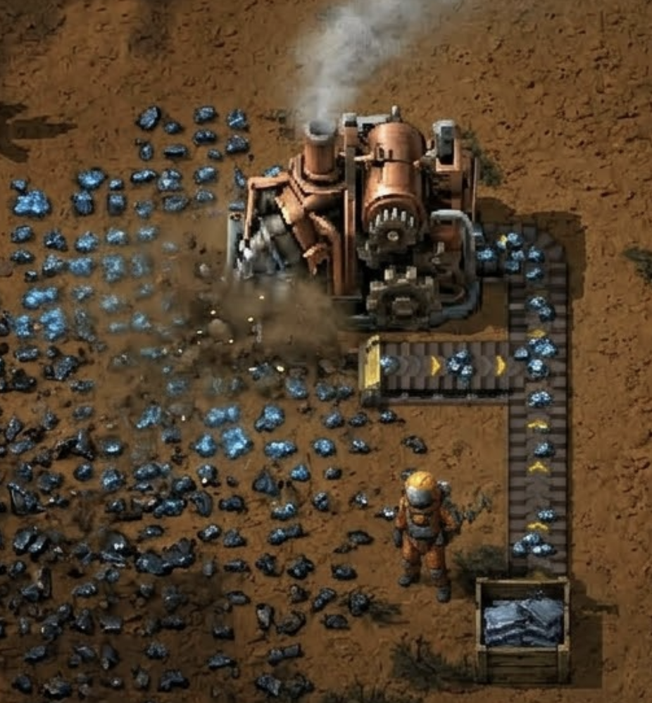
Less memorisation, faster boilerplate. Speed came from delegation.
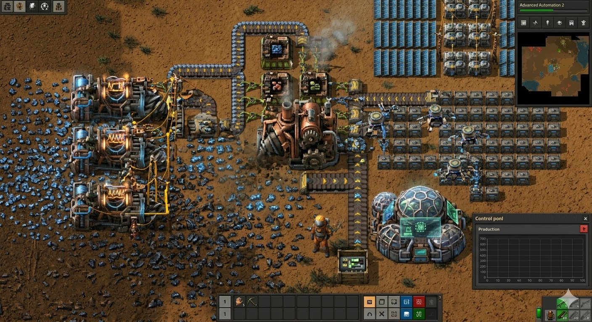
← we are hereFull features from descriptions. Agent owns the task end-to-end inside your session.
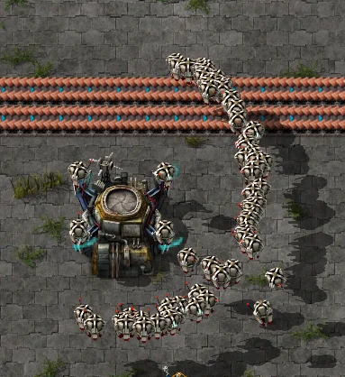
Sub-agents in parallel — each owns a stage, sees only what it needs. You orchestrate, they execute.
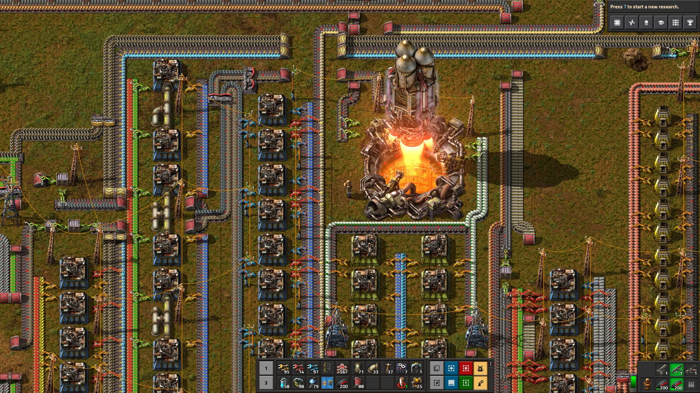
Runs without you. No workstation needed — define the goal, agents handle the rest while you sleep.
Without a harness, an AI agent is a thoroughbred in an open field. Fast, impressive, utterly useless for actual work.
| Before | Now | |
|---|---|---|
| Code | Write it yourself | Design environments where AI writes it |
| Debug | Debug code | Debug agent behavior |
| Review | Review code | Review agent output + harness efficiency |
| Tests | Write tests | Design testing strategies |
| Docs | Write documentation | Build docs as machine-readable infra |
Model is commodity. Harness is competitive advantage.
There will be more work, not less. We will just do it an order of magnitude faster.
Most people confuse the model with the tool. They're different layers.
Claude, GPT, Gemini
The "brain" — generates text
File ops, memory, context, tools, ReAct loop
The actual agent infrastructure
Chat, editor, terminal
What you interact with
Key insight: natively matched harness + model (same vendor) consistently outperforms mixed setups. The vendor optimizes the pair together.
| Claude Code | Cursor | Copilot | Codex (OpenAI) | |
|---|---|---|---|---|
| Model | Claude (Anthropic) | Any (configurable) | Any (configurable) | GPT (OpenAI) |
| Harness | Own (native) | Own | — | Own (native) |
| Strength | Output quality, sets the standard first — others follow. Best for agentic development | Speed, UX, inline diff, cherry-pick any model | GitHub integration | Best for pure coding tasks, cloud agents |
| Weakness | Initial setup complexity | Rate limits, IDE-locked | No harness, much lower quality | Slow to ship new features |
Mar 23: Copilot, Codex (ChatGPT), and Cursor company accounts are disabled. Save your data before then.
Access via console.jumpcloud.com → install Claude Code.
You've already done this, right? Right?
Recommendation: terminal. Extensions require extra configuration and most learning materials assume terminal. Tried the extension — ended up back in terminal.
The main shift: diff review instead of inline edits. Different from Cursor/Copilot but works well once you adapt.
No cooldown. Shared org pool — can be redistributed if needed. Don't worry about tokens.
Launch Claude Code from a parent directory containing multiple projects. One agent, full context across repos — great for cross-repo refactors or shared libraries.
~/projects/
├── user-app/
├── emails/
└── shared/
$ claude # runs here, sees allMCPs extend Claude's reach into your actual workflow — not just code.
rtk-ai/rtk)--chrome is unavailableRun /mcp list to see connected MCPs and their auth status. Most require OAuth — authorize once per session.
--chromeClaude can control a Chrome browser directly — navigate, click, fill forms, take screenshots, read the DOM.
Windows limitation: --chrome mode requires additional setup on Windows (Chrome debug port configuration). Works out of the box on macOS and Linux.
Launch a local dev server → point Claude at it → describe what to check. Useful for catching layout regressions without writing Playwright specs.
Shift+Tab twice. Read-only exploration until you confirm. Fewer wrong assumptions. Use /model opusplan to switch to Opus for the planning phase — better reasoning on complex tasks.claude --continue — resume the latest session. --fork to try a different approach from the same point.An LLM is a pure function. Same model — but the output quality depends entirely on what you put in.
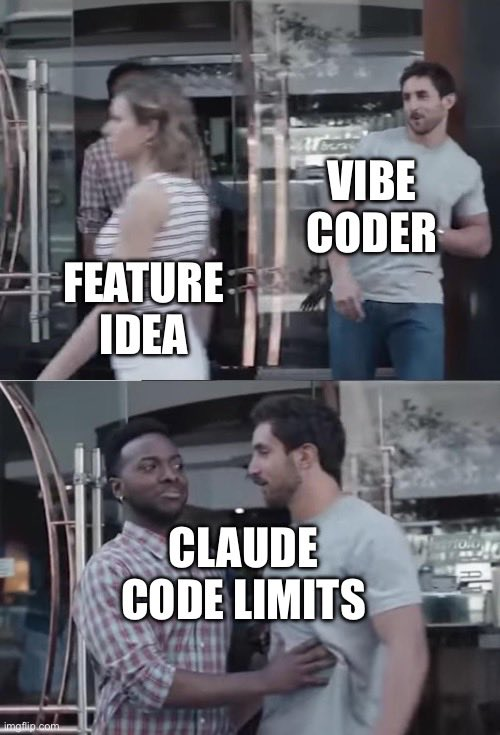
The goal isn't to give the model more — it's to give it exactly what it needs. As I covered in the previous talk: it's all about storytelling.
Each solves a different problem. Don't mix them up.
| BLOCK | WHAT IT IS | WHO TRIGGERS | GOOD FOR |
|---|---|---|---|
| CLAUDE.md | Persistent context the model reads at session start | Auto-loaded | Rules, conventions, "never do X" |
| Slash commands | Stored prompts and multi-step procedures | You, explicitly | Recurring workflows you control: /commit, /review-pr |
| Skills | Instructions + code bundled as a portable capability | Claude, automatically | Shareable domain knowledge: translate, markup, deploy |
| Hooks | Shell scripts that run at specific lifecycle events | Event-triggered, always | Guaranteed side effects: lint, notify, log, gate |
| Sub-agents | Isolated Claude instances with their own context window | Claude spawns, or you explicitly | Parallel work, large codebases, multi-step isolation |
A markdown file Claude reads at session start — your persistent instructions. The more it knows about your project and preferences, the less you repeat yourself.
~/.claude/CLAUDE.md — personal global defaults: your preferences, style, tools./CLAUDE.md — project conventions, committed and shared with the team./CLAUDE.local.md — your local overrides, gitignoredAfter fixing a mistake: "Update CLAUDE.md so you don't do this again." The agent maintains its own instructions.
Convention across all our projects: we proxy everything through AGENTS.md — one entry point regardless of the tool.
Tip: Don't overload — noisy context hurts results. Keep AGENTS.md compact. Use progressive resolve — module-level files for local context, root only for global rules. The agent reads the closest one first.
Stored prompts and multi-step procedures you trigger explicitly. From simple one-liners to complex workflows.
/commit — draft a commit message/review-pr — review a pull request/compact — compress context to save tokens/model opusplan — switch to Opus for planning phase/implement — spec → code → MR, your custom pipeline~/.claude/commands/ — global, personal.claude/commands/ — project, shared with teamIf a skill isn't being auto-invoked reliably — wrap it in a slash command. You get explicit, predictable control.
Skills are all about automatic discovery. Bundles of instructions + code Claude finds and applies on its own. Best for single, well-defined tasks.
.claude/skills/, can include Python scriptsAuto-invocation can be inconsistent. For critical workflows — use a slash command instead for predictable control.
A skill file is also an onboarding doc — a new team member reads the same file as the agent.
Hundreds of ready-made skills available to download. You can also grab skills from colleagues — just copy the file.
A self-contained AI assistant with its own personality, knowledge, and tools. Claude can delegate to them automatically, but you can also tell it explicitly: "Use the debugger subagent to check this error". The right expert is always on the case.
Ticket → spec → code → tests → MR → Jira comment. Each step is a task. The agent chains them.
Isolated context is a double-edged sword: good — clean window, no noise; bad — agent may lack knowledge it needs. Solution: put domain knowledge into skills. Skills travel with the agent.
Parallel agents burn tokens fast. Use for tasks that genuinely benefit from parallelism — not as a default.
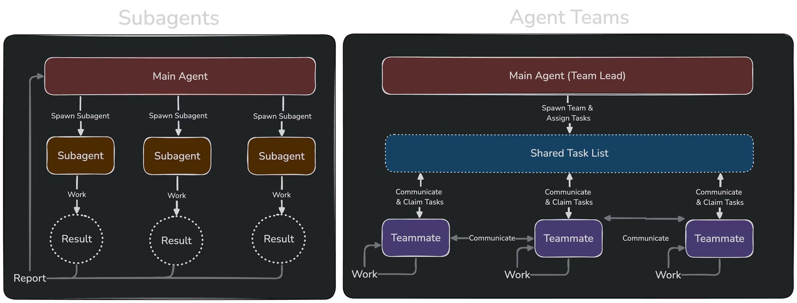
Rule of thumb: if workers only need to report results — subagents. If they need to debate and coordinate — agent team.
Part 3
A monorepo for all customer-facing transactional emails. What we had going in:
Well-documented, convention-heavy, repetitive, low-risk. The perfect candidate to fully delegate to an agentic pipeline.
Good docs + clear conventions + isolated outputs = agents can own this end-to-end.
A single comprehensive file with all conventions, structure, and rules. The agent reads it at session start — instant onboarding.
5 specialized skills — domain knowledgeFull awareness of conventions, file structure, build pipeline. No more hallucinating partials or inventing helpers. It knew what to do and how.
But this alone wasn't enough. Developers still had to run each step, review details, manage the flow. They didn't want to become email experts — they wanted to delegate the whole thing.
So we went further — a fully autonomous pipeline.
Don't use Claude as a smarter autocomplete. Build a pipeline of specialized agents where each one owns a single stage.
or a Notion URL, or just a description — the orchestrator figures out the rest.
The agent fetches the Jira/Notion/Figma context itself. You don't copy-paste specs into the prompt.
Reads the input (any form). Searches the codebase for similar templates, existing keys, partials. Produces a structured spec.
Makes autonomous assumptions, documents them. Uses Opus for complex analysis.
Implements the spec: subject.hbs, content.hbs, context.json. Runs npm test and ESLint. Fixes failures automatically (up to 3 attempts).
Reuses existing partials. Simplicity first — minimal new code.
Opens the rendered email in a browser via MCP. Compares output vs. spec block by block. Produces a structured PASS/FAIL report with screenshots.
Read-only. Never modifies files.
A lead orchestrator (/markup-email) coordinates all three — fetches external context, gates at spec approval, runs deployment.
npm test — fixes failures autonomously1. Review the spec after Planner.
2. Merge the MR after everything passes.
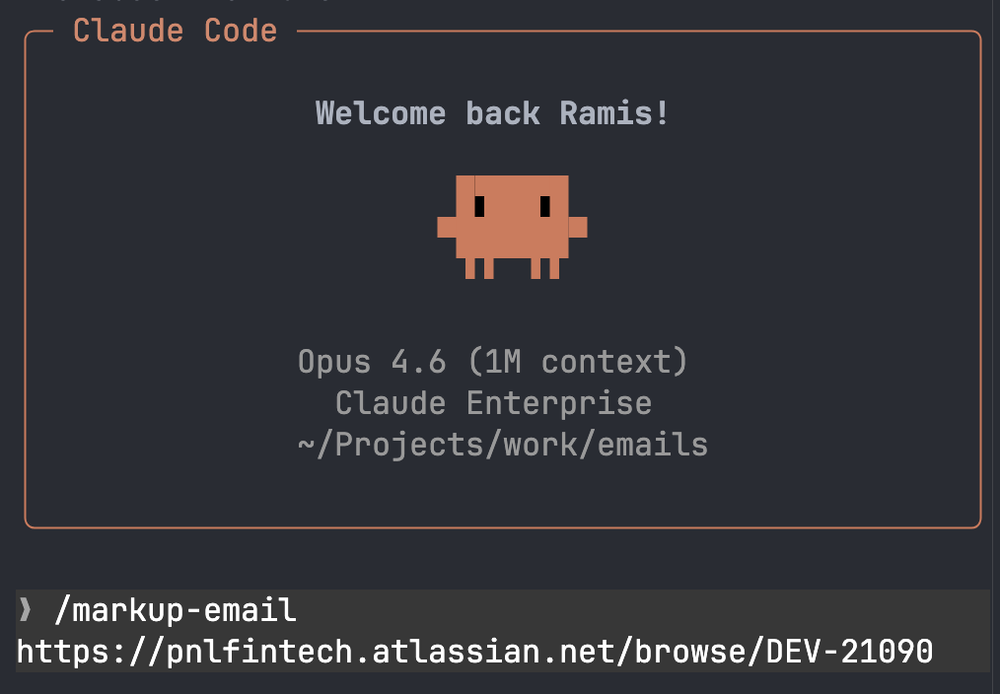
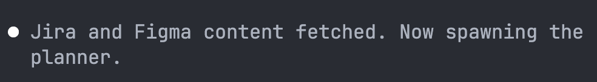
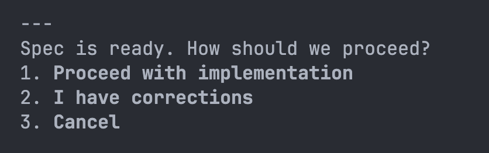
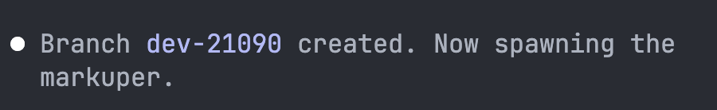
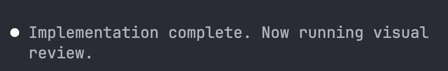
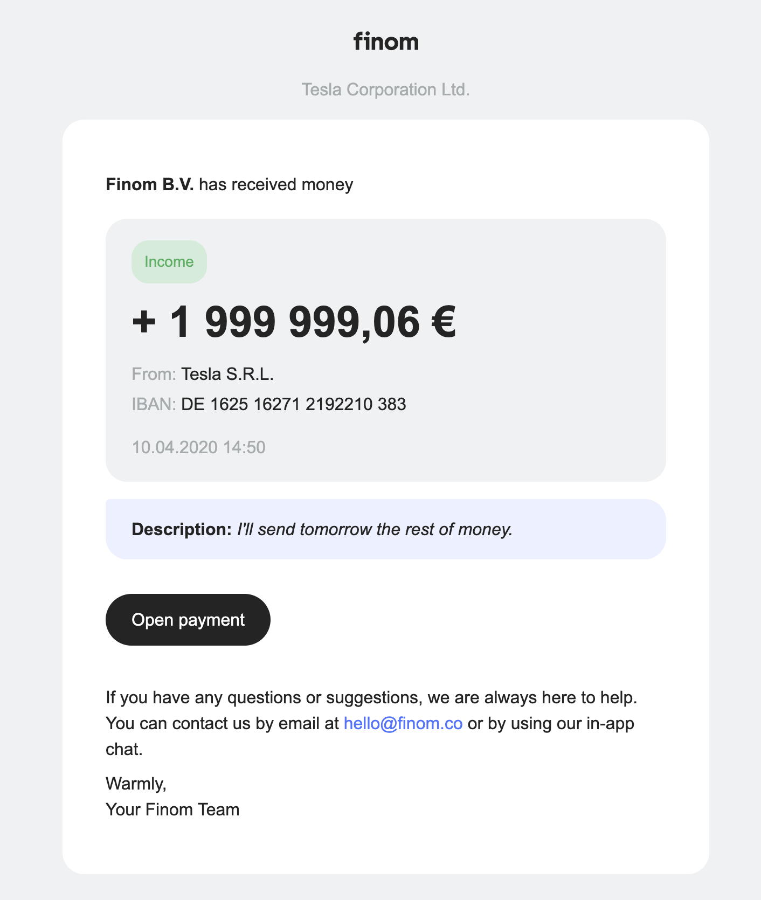
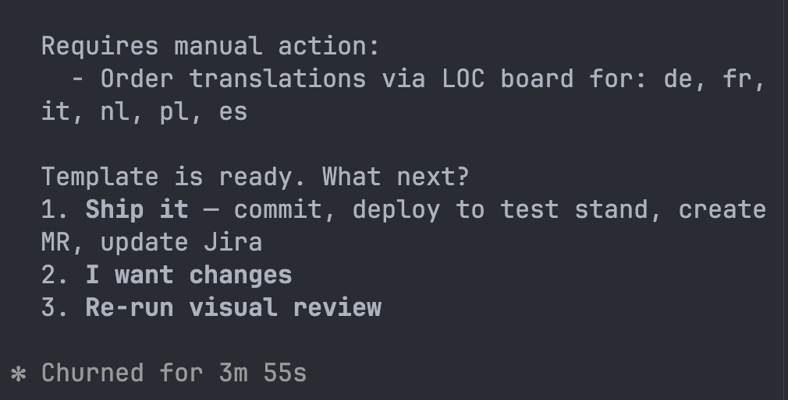
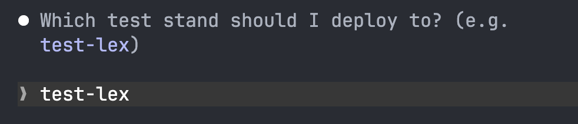
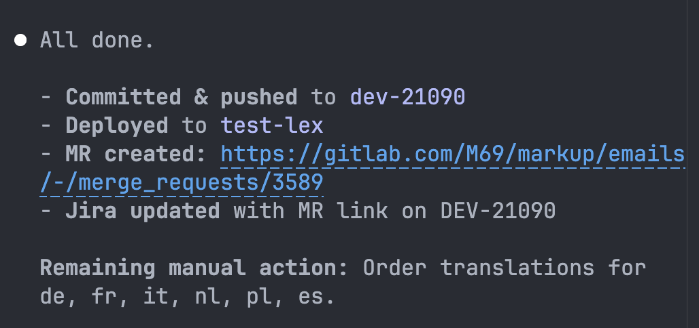
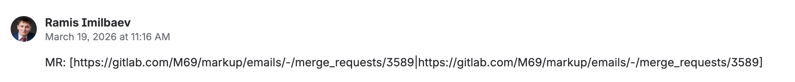
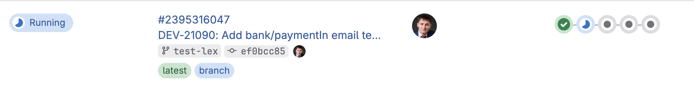
Tested on 6 production emails. Result: more than satisfactory.
First backend dev to ship an email with zero* frontend involvement.
The agent moves outside the repo. n8n orchestrates triggers — Jira webhook fires, agent picks up the task, delivers a ready MR. No terminal, no human in the loop.
Same context, same skills — just a different trigger. The agent doesn't care who starts it.
Part 4
Full agentic dev infrastructure for the main repository.
/implement DEV-12345
Planner reads Jira/Figma/Notion →
builds spec → you approve →
Coder writes tests → writes code → lint/types →
pushes, opens MR, comments in Jira
The agent reads Figma itself, finds similar patterns in the repo itself, writes tests first.
AGENTS.md — root repo mapsrc/components/AGENTS.mdsrc/features/AGENTS.mdsrc/i18n/AGENTS.md/implement — ticket → MRThe infrastructure is live. It gets better with every use.
Yes, it will hallucinate at first. The only way to fix that is to try it, find the gaps, and fix them.
Try it/implement. See what it can do out of the box./implement DEV-XXXX on a real ticket. Notice the difference.Nobody is forced to use /implement — use it when it makes sense. The goal is to have the option, not to replace your workflow.
The goal: the agent knows the codebase as well as the most experienced dev on the team. That only happens if the team is involved.
Next quarter — bringing the same agentic infrastructure to Back Office.
/implement → spec → code → MRBack Office gets the same infrastructure
This presentation was also vibe-coded with AI.
frontend-design skillWant one like this? Just describe what you need. The agent handles the rest.